MATLAB の中で使う
MATLAB が入っている PC。いちばん手軽です（4章 → 5章）。Toolbox は不要です。
Operating Guide · Internal Use
会社の Windows PC で検証ツール（MATLAB アプリ）を動かし、実データ（Excel）で面内推定の手法を比べるための手順です。 MATLAB の中で使う方法と、MATLAB の無い PC でも使えるようにスタンドアローン版（exe）を作って配る方法を説明します。
Overview
このツールは、Excel のアライメント計測データを読み込み、学習に使う Shot から残りの Shot の値を推定して、 推定の手法（GPR・TPS・Kriging・GAM・XY 多項式・RT モデル）を同じ条件で比べます。 使い方は次の3通りです。自分の PC の環境に合うものを選んでください。
MATLAB が入っている PC。いちばん手軽です（4章 → 5章）。Toolbox は不要です。
MATLAB と MATLAB Compiler が入っている PC で、配るための exe（とインストーラー）を作ります（4章 → 6章）。
MATLAB が入っていない PC。無料の MATLAB Runtime を入れて exe を起動します（7章）。
対象者：MATLAB でフォルダを開き、コマンドウィンドウにコマンドを入力できる人。exe を使うだけなら MATLAB の知識は不要です。
Prerequisites
version と入力すると表示されます（このツールは R2022b で動作確認済み）。license('test','Compiler') と入力して 1 が返れば使えます。C:\work\matlab_app）にします。ファイルの場所の問題を避けるためです。実データと、書き出した結果の Excel は社内の PC の中だけで扱ってください。GitHub へ上げたり、社外のサービスへ送ったりしないでください。 リポジトリに入っているサンプルデータは乱数で作った模擬データです。
Workflow
MATLAB の中で使うだけなら、手順 1・2・5 だけで使えます。
Preparation
ブラウザで https://github.com/rsakamoto-0824/alignment-estimation-benchmark を開き、
緑の「Code」ボタン →「Download ZIP」を押します。社外のサイトに出られない場合は、作成者からフォルダを受け取ってください。
ZIP を展開し、中の matlab_app フォルダを C:\work\matlab_app に置きます。
ほかのフォルダ（Python 版の評価や資料）は、このツールには不要です。
C:\work\matlab_app の中に、runAlignmentEstimationApp.m・AlignmentEstimationApp.m・
+alignest・build・sample_data・tests・docs があれば準備完了です。
Use A
MATLAB を起動し、コマンドウィンドウに次を入力して Enter を押します。
cd C:\work\matlab_app次を入力すると、ツールの画面が開きます（初回は画面が出るまで数十秒かかることがあります）。使い方は8章を見てください。
runAlignmentEstimationApp次を入力すると、自動テストが走ります（数分）。最後に「成功 120 件、失敗 0 件、未完了 0 件」と出れば、 この PC の MATLAB で正しく計算できています。
cd C:\work\matlab_app\tests
runAllTests
cd C:\work\matlab_app模擬データの評価に使った Python 版と同じ計算結果になること（8件）、データの読み込みと前処理（24件）、 評価・集計・書き出し・設定の保存（17件）、質的変数の設計（2件）、RBF・空間モデルの Backfitting と質的変数の選択（X・Y 別の選択を含む、10件）、 画面の一連の操作（ライト・ダークの切り替えを含む、18件）、Overlay 補正の評価（入力した補正の式を含む、7件）、平均の図・Shot 重ね合わせ・散布図・優先順のファイル（11件）、計測率・必ず計測する Shot・異常値の除外・I 効率と D 効率（9件）、平均値・中央値に対する改善と分布の比較（4件）、書き出した評価結果・推定値の読み込み（2件）、正規性検定・ANOVA が SciPy と同じ結果になること（5件）、 追加したモデルの選択肢（Matérn の ν・spherical・GAM の形状関数とガウス過程のカーネル、5件）、 評価点の絞り込み・条件の追加・処理時間の内訳・半径の mm 指定（8件。条件を足した結果が最初からまとめて評価した結果と同じこと、 すべての点を残す絞り込みで評価と同じ指標になることなど）、 計測配置の選び方（D 最適・Mark 単位・人の選択の読み込み・選び方の比較）・Fringe Zernike・MAD・Slot の偶奇・Shot ごとの補正の式・時間の目安・既定の設定ファイル・ヘルプ（12件）です。 全 142 件（2026-10-24 時点）。
Use B
MATLAB と MATLAB Compiler が入った Windows PC で行います。Mac では Windows 用の exe は作れません。
| 配り方 | 作るコマンド | 使う PC に必要なもの | 向いている場合 |
|---|---|---|---|
| exe だけ | buildStandaloneApp |
同じ版の MATLAB Runtime を別に入れる | Runtime がすでに入っている PC |
| インストーラー（ネットから Runtime） | buildStandaloneApp(makeInstaller=true) |
インストール時にインターネット接続 | 社外のサイトに出られる PC |
| インストーラー（Runtime 入り） | buildStandaloneApp(makeInstaller=true, runtimeDelivery="installer") |
なし（ファイルが数 GB になる） | 社外のサイトに出られない PC |
次を入力して ans = 1 と出れば使えます。0 なら 11章の「MATLAB Compiler が使えません」を見てください。
license('test','Compiler')
C:\work\matlab_app を現在のフォルダにしてから、上の表で選んだコマンドを入力します。
次の例は、ネットから Runtime を入れるインストーラーを作る場合です。数分かかります。
cd C:\work\matlab_app
addpath build
buildStandaloneApp(makeInstaller=true)
「作成しました」と表示されれば完了です。build\output\win64\ に AlignmentEstimationApp.exe などが、
インストーラーを作った場合は build\output\win64\installer\ に AlignmentEstimationApp_Installer.exe ができます。
画面だけのアプリとして作ります（黒いコマンド画面は出ません）。Toolbox は使っていないので、MATLAB 本体の Runtime だけで動きます。 使う PC の MATLAB Runtime は、exe を作った MATLAB と 同じ版（例：R2022b で作ったら R2022b）が必要です。
Use C
AlignmentEstimationApp_Installer.exe を使う PC にコピーしてダブルクリックし、画面の指示に従ってインストール先を選びます。
MATLAB Runtime が入っていなければ、一緒にインストールされます（ネットから入れる形では、インターネット接続が必要です）。
インストール時に選んだインストール先にある AlignmentEstimationApp.exe（またはインストール時に作ったショートカット）から起動します。初回は画面が出るまで時間がかかることがあります。
MathWorks のサイト https://www.mathworks.com/products/compiler/matlab-runtime.html から、
exe を作った MATLAB と同じ版の MATLAB Runtime（Windows 用）を入れます。
AlignmentEstimationApp.exe を任意のフォルダ（例：C:\work\app）にコピーしてダブルクリックします。
自作の exe は署名が無いため、Windows やウイルス対策ソフトが警告を出すことがあります。 実行してよいかは社内のルールに従い、分からなければ情報システムの担当者に確認してください。
How to use
画面上のタブを左から順に進めます。MATLAB の中で起動しても exe で起動しても、画面は同じです。
初めてのときは、sample_data\sample_alignment.xlsx（模擬データ5枚）で一度通して試してください。
exe を配るときは、このサンプルの Excel も一緒に渡すと試しやすくなります。
画像は Mac で撮影したものです。Windows ではウィンドウの枠や文字の形が少し違いますが、配置は同じです。
画面の色は、上のメニュー「表示」の「ライトモード」「ダークモード」で切り替えられます（次に開いたときも同じ色）。 用語や式が分からないときは、「6. ヘルプ」タブ（メニュー「表示」→「ヘルプを開く」）を見てください。
Excel（.xlsx）または CSV を選びます。Excel に複数のシートがあれば、「シート」で選び直せます。
左の表の「ファイルの列」に、標準の項目にあたるファイルの列が入っていれば正しく対応づいています。 列名が違うときは、その欄を押して選び直します。必須の項目（Xmm・Ymm・markXmm・markYmm・measX・measY）は必ず選びます。 工程名（Operation）と装置 ID（EqpId）は任意です。あれば、工程・装置が違う計測を別々に扱い、結果の Excel にも出ます。
右の「座標の単位」の表に、列ごとの入力の単位・mm への倍率・ファイルの最大値・mm に直した値が出ます。 「確認」に「⚠」が出た列は、「入力の単位」を選び直すか、「値の大きさから単位を推定」を押します（列名が Xmm でも中身が µm なら µm）。
Direction の列が無いときは、「Scan 方向（Direction）が無い行に付ける値」の規則で Scan 方向 1・2 を付けます。 初期値は「一筆書き」で、shotNo が最も小さい Shot を 1 として、行ごとに折り返す道順で Shot を繋ぎ、1・2 を交互に付けます （ほかに shotNo の奇偶・市松模様・Shot 行ごと・Shot 列ごと・付けない。「付ける 1 と 2 を入れ替える」で反対にできます）。
右下の「読み込み結果」に、Wafer の枚数、工程・装置、Shot 数・Mark 数、Shot の大きさ、Scan 方向の出どころ、 除いた点（未測定・半径 150 mm 以上）、まとめた重複行が出ます。
「Wafer マップ（計測値）」には、計測値の矢印の隣に X・Y 成分ごとの色の図（ヒートマップ）が出ます。灰色の枠は Shot です。 矢印の色は長さ |v| です（青 → 緑 → 橙 → 赤。図の右の目盛り）。点が重なって見にくいときは「色の点」の大きさと形（● か ■）を変えます。 「平均・楕円の単位」で ALL（全 Wafer）・LotID・EqpId・Operation・その他の列を選ぶと、「表示する Wafer・平均」にその単位の平均が出て、 Wafer 間で平均した図と、Wafer 間のばらつきの共分散楕円が出ます。 楕円の色は X・Y の相関係数の絶対値 |r| です（MATLAB の既定の色。濃い青 = 相関なし、黄 = 強い相関。図の右の目盛り）。 楕円を描く図では、色が混ざらないように矢印は1色になります（楕円を「なし」にすると、矢印は長さの色に戻ります）。 「ベクトルを描かない（楕円だけ）」に印を付けると、矢印を消して楕円だけを描きます（Shot 重ね合わせ・Wafer ごとのマップにもあります）。 Wafer の名前には、装置・工程などが2種類以上あるときその値が付きます（例：SIM01 (EXP01)。同じ Wafer ID でも装置・工程が違えば別の計測）。 「Shot 重ね合わせ」では、選んだ Wafer のすべての Shot を Shot 内の座標で重ね、Mark の位置ごとの平均と共分散楕円を描きます（Wafer 成分を除いて重ねることもできます）。 Scan 方向があるデータでは、はじめから右に Scan 方向 1・2 の Shot だけを重ねた図が、同じ矢印の倍率で並びます（「Scan 方向で分けた図も並べる」で切り替え）。 「Shot の枠を Scan 方向で色分け」に印を付けると、Shot の枠が Scan 方向の色（緑 ▲ = 1、紫 ▼ = 2）になり、 「同心円の区切り（「2. 評価の設定」の制約）を描く」に印を付けると、I 最適・ランダムの同心円の区切りの半径を橙の一点鎖線で描きます。 「Shot レイアウト」には、左に Shot の並び（数字は shotNo、Scan 方向があれば S1・S2 と薄い緑・薄い紫の塗り）、右に Shot 内の Mark の位置と番号（M の後が markNo）が出ます。 左の図で Shot をクリックすると、その shotNo の Scan 方向が 1 ↔ 2 で入れ替わります（すべての Wafer の同じ shotNo。「Scan 方向の変更を元に戻す」で戻せます）。
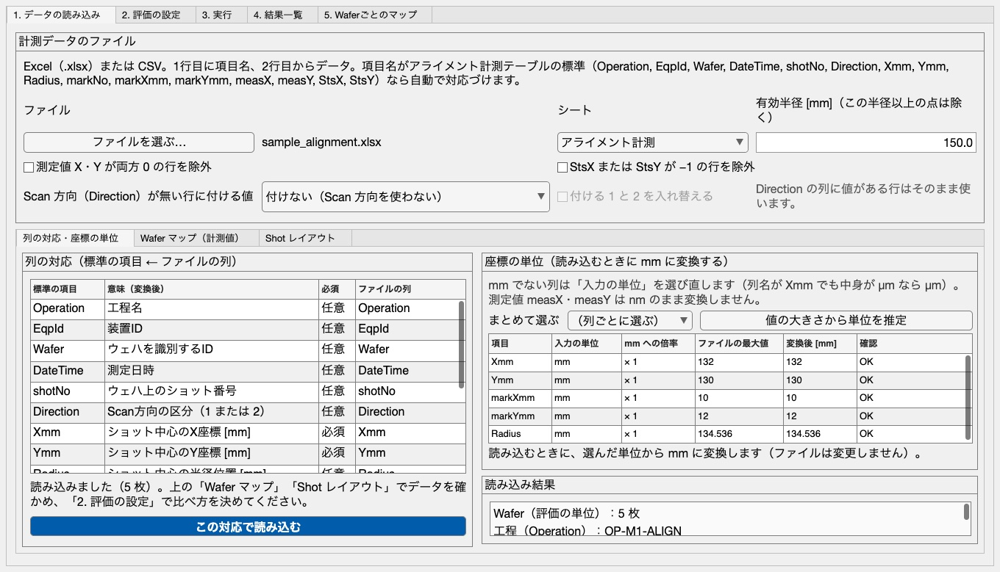
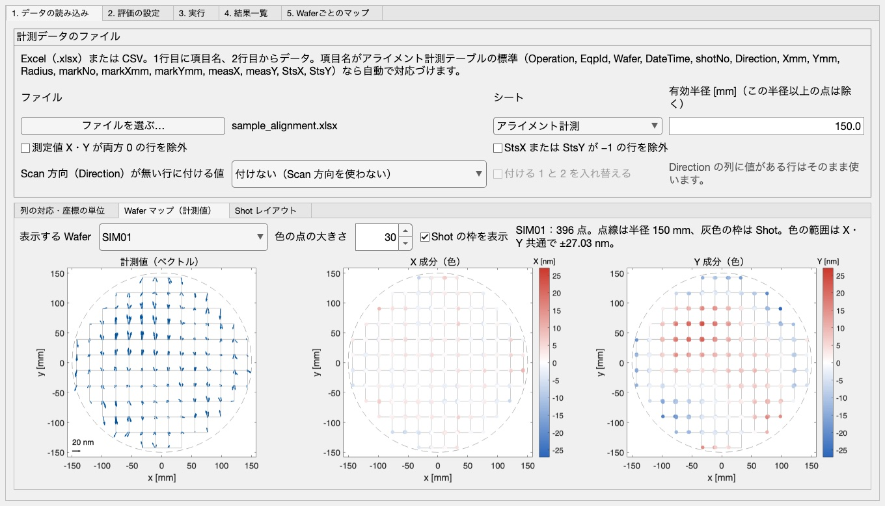
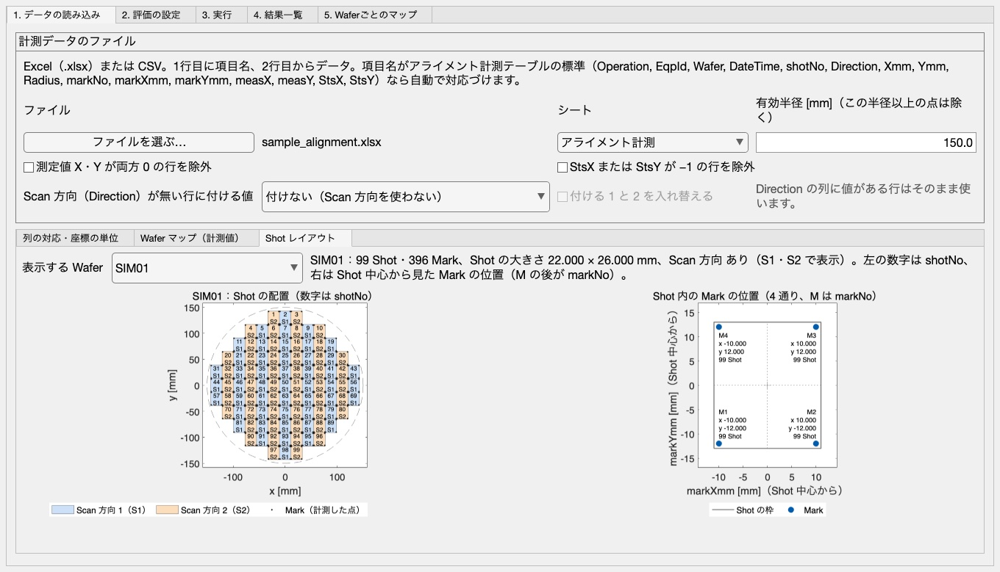
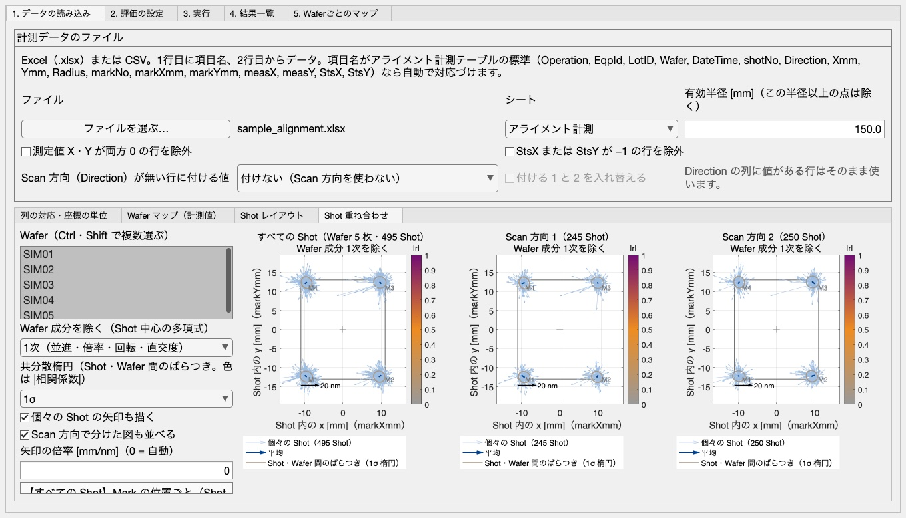
「制約付き I 最適」は前回の評価と同じ選び方です（Wafer 全面の予測のばらつきを小さくする）。「制約付き D 最適」は同じ制約で、
補正モデルの係数をまとめて精度よく決める選び方です。「制約つきランダム」は同じ条件でランダムに選んで何回か繰り返します。
「手動・人の選択」は、1行に1パターンを 名前: shotNo shotNo … の形で書きます（例：担当者A: 1 5 9 13 17。名前は省略可）。
「Mark 単位の I 最適」は、Shot ではなく計測する Mark を選びます（下の手順）。
選び方は Ctrl・Shift で 複数 選べます。2つ以上選ぶと、学習パターンの名前の先頭に選び方が付き（「I最適 20 Shot」「D最適 20 Shot」など）、
結果一覧の「計測配置の比較」で選び方どうしを比べられます。
「人の選択を Excel から読み込む…」を押し、1行目が見出しの表（shotNo の列と、パターンごとの列に 1 = 計測する・0 = しない）を選びます。 「計測マップを Excel に書き出す…」で書き出したファイルの「計測マップ」シートに、人が列を足して 1・0 を書いたものをそのまま使えます（見出しがパターンの名前になります）。 読み込むと「手動・人の選択」の欄に1パターン1行で入り、選び方の「手動・人の選択」にも印が付きます。 I 最適・D 最適と比べるときは、人の選択の Shot 数に近い学習 Shot 数も入れておきます。
選び方に「Mark 単位の I 最適」を選ぶと、すべての Shot で必ず1点以上を計測する 制約のもとで、計測する Mark を最適計画で選びます。 「1 Shot あたりの計測 Mark 数」（初期値 1。空白区切りで複数入れると比べる）で計測する Mark の数（= 数 × 候補 Shot 数）を決めます。 「Mark 番号ごとの計測割合を全計測とそろえる」をオンにすると、Mark 番号ごとの計測数が、全 Mark を計測したときと同じくらいの割合になります。 評価は計測しなかった Mark で行います。
選び方を「ファイルの優先順で指定」にして「優先順のファイルを読み込む…」を押し、Shot 番号と優先度の表（Excel・CSV）を選びます。 優先度 1 の Shot は必ず学習に使い、0 の Shot は使わず（評価だけ）、残りはファイルの行の順に学習 Shot 数まで足します。
「開始」「終了」「刻み（スイープ幅）」で決めます（例：10・40・5 で 10, 15, …, 40）。欄の下に比べる Shot 数の並びが出ます。 右の欄を「計測率 [%] で決める」にすると、計測率（計測値のある Shot に対する学習 Shot の割合）の開始・終了・刻みで比べます （例：10・40・10 で 10, 20, 30, 40 %）。Wafer ごとに Shot 数 × 計測率 を四捨五入した数の Shot を使います。 組み合わせに誤りがあると、欄の下に理由が出ます。
「同心円の区切り」には、区画を分ける Shot 中心の半径を mm で空白区切りに入れます（半径 150 mm の Wafer が前提。初期値は 67.5 105。
0 より大きく 150 より小さい値。使わないなら空欄）。以前の「Wafer 半径に対する比」で保存した設定ファイルは、読み込むと 比 × 150 mm に直ります。
「交換法の初期配置の数」の下に、今の設定で学習パターンを作る時間の目安が出ます。時間は初期配置の数にほぼ比例し、
初期配置 1 つあたり 約 0.01 秒 × 学習 Shot 数です（模擬データ・候補 99 Shot で測った値）。初期値 10 を 30 にすると約 3 倍、100 にすると約 10 倍かかります。
模擬データでは 10〜20 を超えても I 基準はほとんど良くならなかったので、まず 10 で評価してください。
I 最適・ランダムでは、「必ず計測する shotNo」に shotNo を空白またはカンマ区切りで書くと、その Shot を必ず学習に入れ、 残りを I 最適（またはランダム）で選びます。「最外周の Shot をすべて必ず計測する」をオンにすると、上下左右のどこかに隣の Shot が無い Shot をまとめて必ず計測します。欄の下に、必ず計測する Shot の数が出ます。
「比べる手法」の「質的変数」で、推定に使う質的変数（Scan 方向・Mark 番号・Shot 行の奇数・偶数）と、 ファイルのその他の列（標準の項目に対応づけなかった列。例：Chuck）を選びます。初期設定は Scan 方向と Mark 番号です。 「Y 成分は別に選ぶ」に印を付けると、下の「Y 成分」の行と右の列の一覧で、Y 成分に使う質的変数を X 成分とは別に選べます （印を付けた直後は X 成分と同じ選択。印が無ければ X 成分の選択を Y 成分にも使います）。
初期設定は「推奨の組み合わせ」（各系統の代表 9 手法）です。画面の下に計算回数と時間の目安（1条件 2 秒 × 条件の数）が出るので、長すぎる場合は手法や Shot 数を減らします。 「設定を保存…」で設定をファイルに残し、次回「設定を読み込む…」で同じ条件に戻せます。
GPR のカーネルで「matern（ν を指定）」「ardmatern（ν を指定）」を選んだときは、「Matérn の ν」に値を空白区切りで入れます（例：0.75 1 2）。
Kriging のバリオグラムには spherical（球形）も選べます。GAM は「形状関数」で、X・Y、半径の項ごとにスプラインとガウス過程回帰のチェックを付け、チェックした組み合わせをすべて評価します。
ガウス過程回帰を選んだときは、その下の「ガウス過程回帰のカーネル」で使うカーネル（初期値は matern52）にチェックを付けます。複数選ぶとカーネルごとに評価し、matern（ν を指定）は右の「ν =」に値を入れます。
RBF も TPS・Kriging と同じく、質的変数の Backfitting を選べます。
「Fringe Zernike」に印を付けると、Fringe 番号の Zernike 多項式（次数 k で Z1〜Z(k+1)²）の近似も比べます。「次数」に空白区切りで入れると次数ごとに比べます（1〜6）。
ν を指定した Matérn の手法は計算が遅いので、時間の目安では 1条件 6 秒（3 倍）で見積もります。
左下の「Overlay 補正の評価」で、補正モデルの Wafer 成分（Shot 中心の多項式）・Shot 共通成分（なし・1次）・
Shot ごとの成分（並進・1次）を選びます。推定値で補正したときに Overlay 残差がどれだけ増えるかを評価します（すべて「なし」なら評価しません）。
Wafer 成分・Shot 共通成分・Shot ごとの成分で「式を入力」を選ぶと、その下の「dx =」「dy =」に補正量の式を書けます
（例：k1 + k3*x + k5*y + k7*x^2 + k9*x*y。x・y は Wafer 成分では Shot 中心の座標、Shot 共通成分・Shot ごとの成分では Shot 内の座標。
Shot ごとの成分は Shot ごとに別の係数で当てはめます）。
係数は最小二乗で求めるので、係数の名前は何でもかまいません。読めない式は欄の下に赤字で理由が出ます。
左下の「外周とみなす Mark の半径 [mm]」（初期値 120 mm）以上の Mark を外周とします。結果一覧の「外周の RMSE」「内側の RMSE」と、 散布図の色分け「外周・内側」の境目です。
左下の「学習データの異常値を除いて推定する」をオンにし、「n =」に正の値（例：3）を入れ、判定のしかたを「平均と σ（nσ）」か「中央値と MAD（n × 1.4826 × MAD）」から選びます。 Wafer・学習パターンごとに学習点の中心（平均または中央値）とばらつき（σ または 1.4826 × MAD）を X・Y 別に求め、中心から n × ばらつき を超えて離れた Mark を、X・Y の両方の学習データから除きます。 MAD は大きな外れ値があってもばらつきが大きくなりにくいので、外れ値が目立つデータで使います。 除いた数は Excel の「Waferごと」の「学習から除いた異常値の数」、Wafer ごとのマップでは × 印で確かめられます。
1 枚あたりの推定時間で手法を選ぶときは、左下の「条件ごとの処理時間を記録する」をオンにします。 手法 × 学習パターンごとの時間が、結果一覧の指標「処理時間 [秒/枚]」と Excel の「処理時間」シートに出ます。
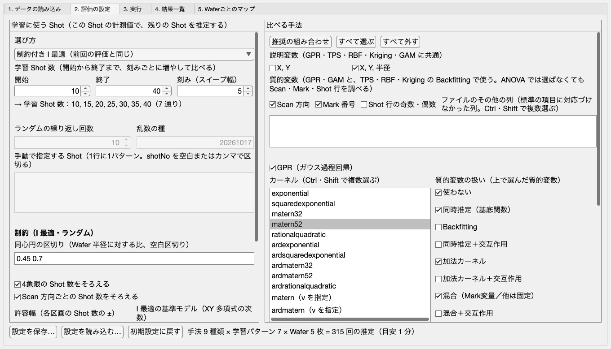
右の「計測マップ」で Wafer と学習パターンを選び、「計測マップを作る」を押します。必ず計測する Shot は橙の太枠、選んで計測する Shot は青、 計測しない Shot は白で、shotNo つきで描かれます。Wafer・学習パターンを Ctrl・Shift で複数選ぶと、Wafer × 学習パターンの図を最大 6 枚並べます （学習 Shot 数による違いや Wafer の違いを見比べられます）。「Scan 方向を色で示す」で Shot の内側に Scan 方向の色の枠と印（緑 ▲ = 1、紫 ▼ = 2）、 「同心円の区切り（制約）を描く」で区切りの半径を描きます（Scan 方向・同心円ごとの Shot 数がそろっているかを目で確かめます）。「図を画像で保存…」で画像に、「計測マップを Excel に書き出す…」で 選んだ Wafer のすべての学習パターンの計測する Shot（1 = 計測する、0 = しない）を Excel に書き出せます。 下の欄には、全計測（候補の全 Shot を計測した場合）に対する I 効率・D 効率（1 なら全計測と同じ、大きいほど良い）も出ます。 Mark 単位の学習パターンでは、計測する Mark を ●、計測しない Mark を ○ で描き、下の欄に Mark 番号ごとの計測数（全計測での割合）が出ます。 Excel には「計測マップ_Mark」シートが加わります。
進み具合と残り時間の目安が出ます。途中で止めたいときは「一時中断」を押すと、それまでの結果が残ります。 「続きから再開」を押すと、残りの組み合わせだけを計算します（中断の後に設定を変えたときは再開できないので、「評価を始める」で最初から計算します）。
「記録」に、推定できなかった組み合わせや学習パターンの注意が出ます。
結果を見て手法や学習 Shot 数を増やしたくなったときは、「2. 評価の設定」で手法にチェックを足すか、学習 Shot 数（計測率）の範囲を広げてから、 「条件を追加して評価（評価済みに足す）」を押します。評価済みの組み合わせは計算せず、増えた組み合わせだけを計算して今の結果に足します （学習パターンは Shot 数の順に並べ直します）。データ・質的変数・制約・評価の条件（外周の半径など）・Overlay 補正を変えたときは、 どの設定が違うかを表示して止まるので、設定を戻すか「評価を始める」で最初から計算します。
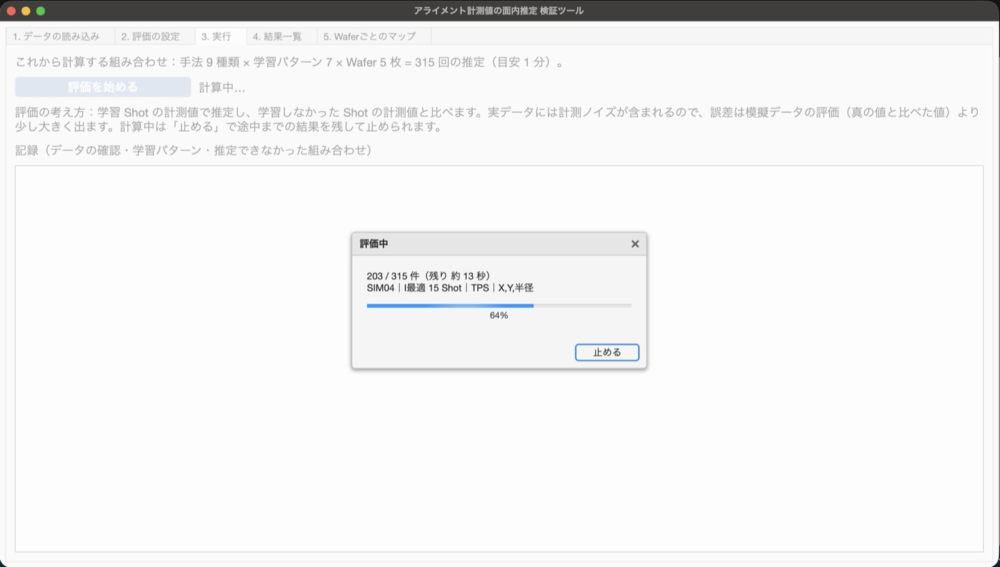
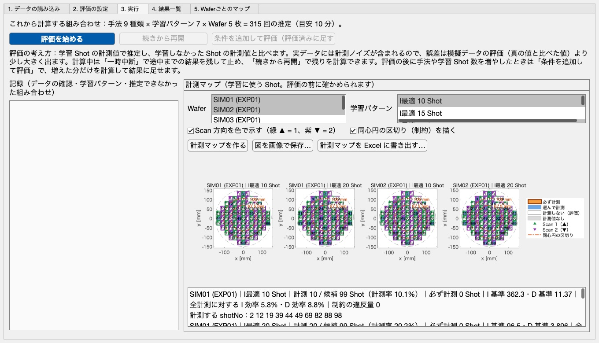
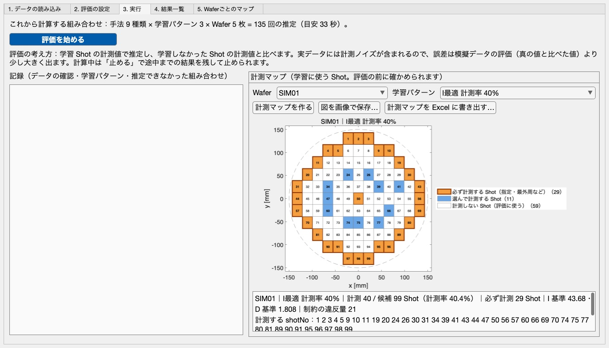
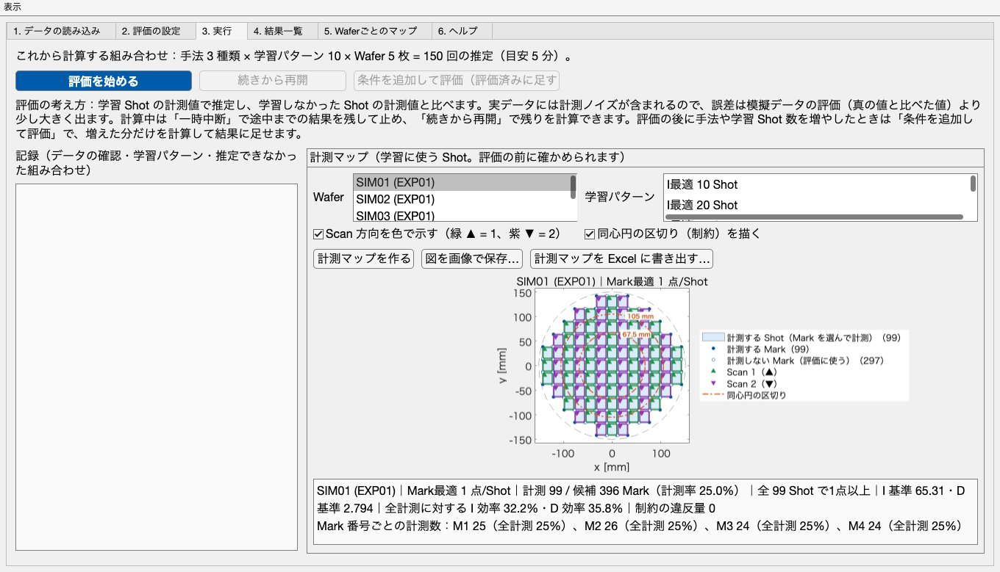
上の「指標」（RMSE・MAE・R²、X・Y・合計）と「集計」（平均・中央値・ワースト値・95%値）を切り替えると、下の表・グラフ・比較が変わります。 指標の「改善率 [%]（平均値に対する）」「改善率 [%]（中央値に対する）」は、学習点の計測値の平均値（中央値）をそのまま推定値にした場合より、 RMSE がどれだけ小さくなったかです（大きいほど良い。0 なら平均値と同じ、負なら平均値より悪い）。改善量 [nm] も選べます。 ワースト値は最も悪い Wafer の値、95%値は 95% の Wafer がそれより良い値です（誤差は大きい側、R²・改善率は小さい側）。 「結果を Excel に書き出す…」で、集計・Wafer ごとの値・学習に使った Shot・設定を1つのファイルに保存します。 「結果を読み込む…」でそのファイルを選ぶと、計測ファイルを読み込まなくても、表・グラフ・基準の手法との比較を描き直せます（画面の上に読み込んだファイルが出ます）。 続けて「推定値の Excel を読み込む…」で、同じ評価から「推定値を Excel に書き出す…」で書き出したファイルを選ぶと、 Wafer ごとのマップ・推定値と誤差の分布・散布図・分布の比較も、書き出した範囲で描けます（すべての範囲を描くには、推定値を「すべての手法・学習パターン・Wafer」で書き出しておきます）。
評価点の絞り込み：上の「評価点の絞り込み」で、Mark の半径の範囲 [mm]・Shot（指定した shotNo だけ／除く）・Scan 方向・最外周を選び、 「絞り込んで再計算」を押すと、条件に合う評価点だけで指標（RMSE・R²・改善率など）を計算し直し、表・グラフ・比較・Wafer ごとのマップを描き直します （推定はやり直さないのですぐ終わります）。欄の下に「評価点 n / N 点」が出ます。「解除」で元に戻ります。 推定値と誤差の分布・箱ひげ図・散布図・分布の比較は、次に「分析する」などを押したときに同じ条件で絞り込みます。 同じ欄は「5. Wafer ごとのマップ」にもあり、どちらで変えても両方がそろいます。
| 中のタブ | 見るもの |
|---|---|
| 表（手法 × 学習パターン） | 手法ごと・学習 Shot 数ごとの値。各列で最も良い手法に「★」と色が付きます。 |
| グラフ | 学習 Shot 数による変化。右の一覧で描く手法を選べます。「エラーバー」で Wafer 間の ±1σ か平均の 95% 区間を付けられます。「横軸」を「I 基準と D 基準」にすると、学習 Shot の組の I 基準・D 基準（I 最適計画の評価指標。小さいほど良い計画）に対する推定誤差の図を2つ並べます。「グラフを画像で保存…」で PNG にできます。 |
| 基準の手法との比較 | 上で選んだ基準の手法と、同じ Wafer・同じ学習パターンどうしで比べた差、95% 区間、基準より良かった Wafer の割合。 |
| 推定値と誤差の分布 | 手法・学習パターン・Wafer を選んで「分析する」を押すと、残差（計測値 − 推定値）のヒストグラム、正規性検定（Shapiro–Wilk・Anderson–Darling・Jarque–Bera）、質的変数（Scan 方向・Mark 番号・Shot 行の奇偶・工程・装置・ロットと、選んだその他の列）の ANOVA が出ます。「推定値を Excel に書き出す…」で、Mark ごとの計測値・推定値・残差と検定の結果を保存します（学習データの Mark も出し、その推定値・残差は空欄。「区分」の列で見分けます）。 |
| 残差の箱ひげ図（ANOVA） | 「推定値と誤差の分布」で「分析する」を押した残差を、質的変数（Scan 方向・Mark 番号など ANOVA と同じ）の水準ごとに箱ひげ図で X・Y 別に描きます。◆ は水準ごとの平均、題名に一元配置の F・p 値・η² が出ます。「質的変数」で変数を選び直せます。 |
| 推定値と実測値の散布図 | 手法・学習パターン・Wafer を選んで「描く」を押すと、実測値と推定値の散布図（X・Y）が出ます。相関係数・回帰直線を表示し、点の色を LotID・EqpId・Operation・Scan 方向・Mark 番号・外周と内側（外周とみなす半径で分ける）・象限（第1〜第4象限）・Slot の偶奇（Wafer ID のハイフンの後の番号の奇数・偶数）・その他の列で分けられます。 |
| 計測配置の比較 | 「2. 評価の設定」で選び方を2つ以上選んで評価したとき、手法と横軸（計測する Mark の数・学習 Shot 数）を選ぶと、選び方（I 最適・D 最適・Mark 単位など）ごとの線と、人の選択・手動の点で、指標を比べます。右の表に学習パターンごとの学習 Shot 数・計測 Mark 数・指標・I 基準・D 基準が出ます。 |
| 処理時間の内訳 | Wafer・学習パターン・手法（複数可）・測る回数を選んで「測る」を押すと、1回分の処理を「学習パターンの作成（最適マップ）・異常値の判定・推定の準備・学習・推論・評価指標の計算・Overlay 補正の評価」に分けて測り、手法ごとの積み上げ横棒（秒と割合）と表に出します。評価の結果は変わりません。 |
| 分布の比較 | 手法・学習パターン・Wafer を選んで「比べる」を押すと、左に Wafer 全面・学習データ・予測対象（学習しなかった Shot）の計測値、右に予測対象の実測値と推定値のヒストグラムが重なって出ます（「軸」で X・Y を切り替え）。下の表に代表統計値（点数・平均・標準偏差・中央値・最小・最大・|平均|+3σ）と、分布の一致性を表す JS ダイバージェンス（0 なら同じ、1 なら重なりなし）が出ます。 |
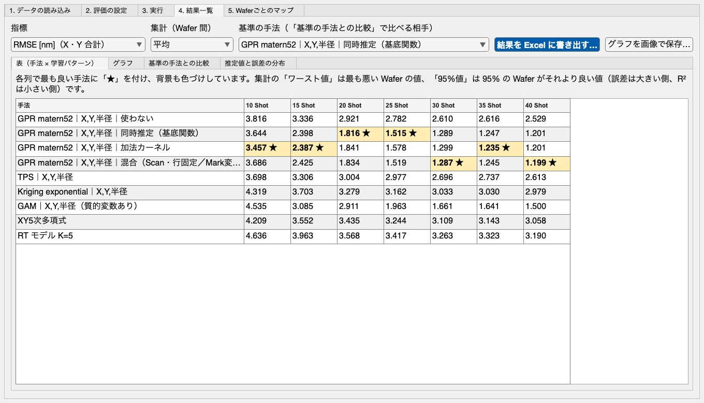
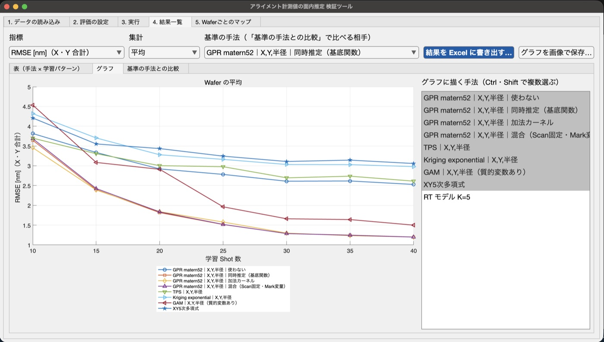
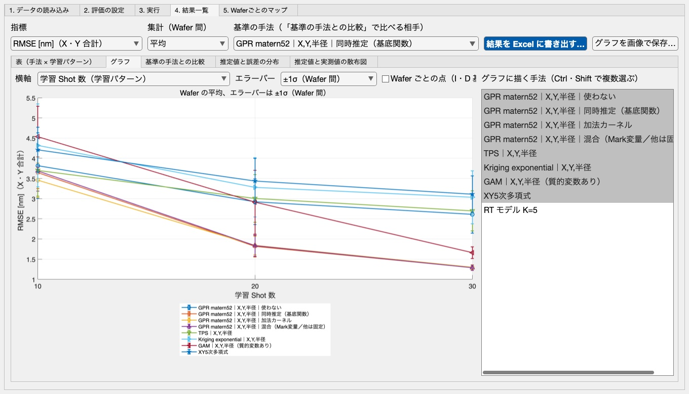
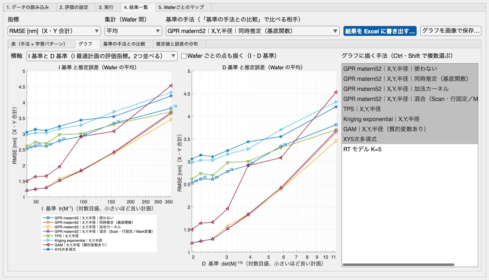
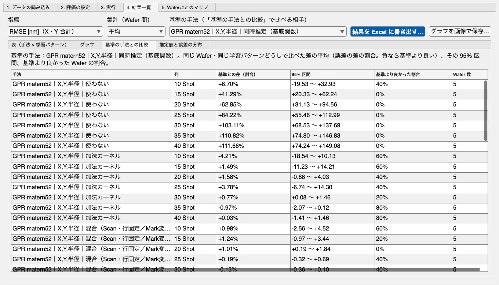
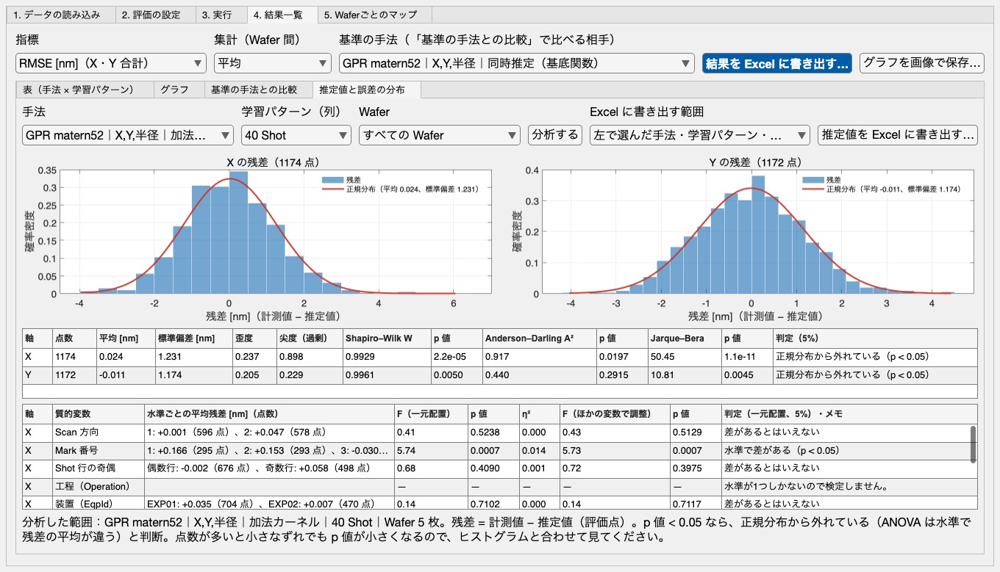
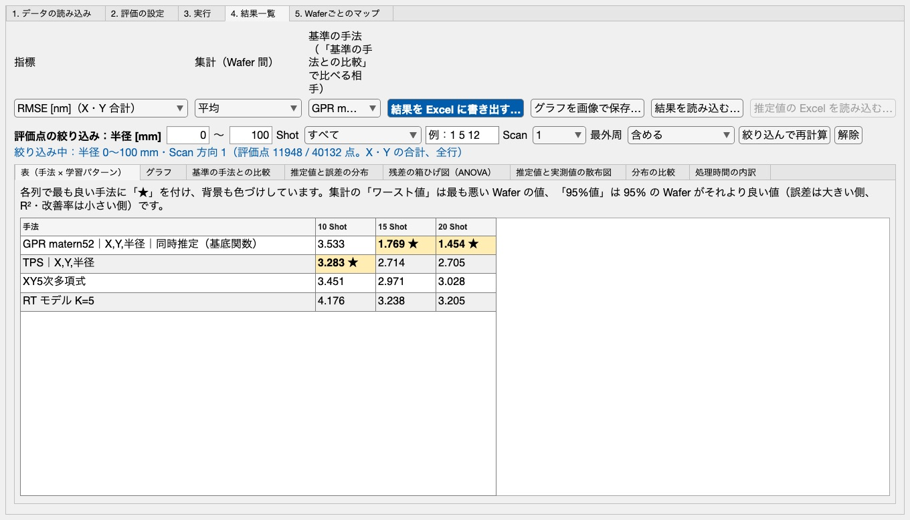
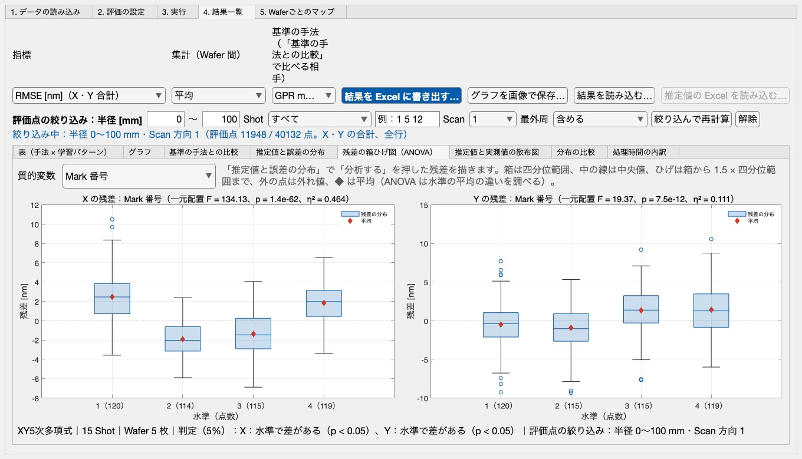
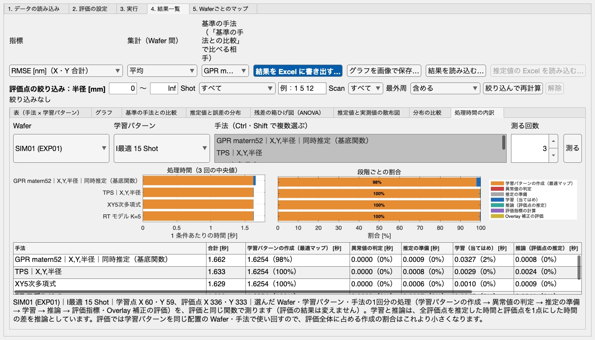
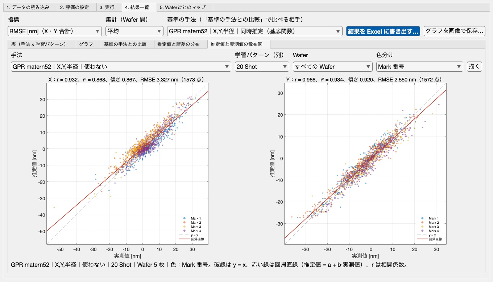
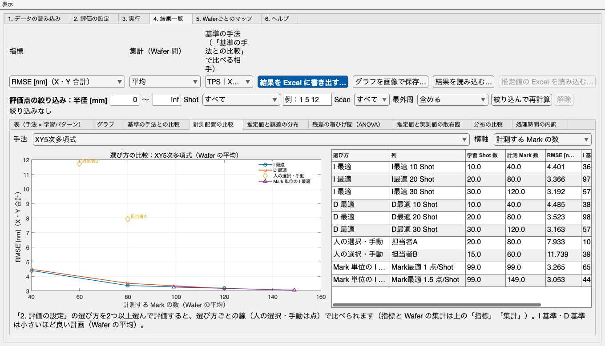
Wafer・学習パターン・手法を選ぶと、評価した Shot の計測値・推定値・残差（計測値 − 推定値）を並べて表示します。 灰色の四角は学習に使った Mark、細い灰色の枠は Shot です。「表示」で矢印と色（X・Y）を切り替えられます。 「Wafer・平均」で LotID・EqpId・Operation ごとや全 Wafer の平均を選ぶと、Wafer 間で平均した図と共分散楕円（色は X・Y の相関係数の絶対値 |r|）が出ます。 楕円を描く図の矢印は1色（計測値・推定値は青、残差は橙）、楕円が無い図の矢印の色は長さで、計測値と推定値は同じ色の範囲です。 「図の内容」を「Overlay 補正」にすると、実測値で補正した残差・推定値で補正した残差・推定による変化（両者の差）を並べ、下の行に |平均|+3σ を出します。 色のときは「色の点の大きさ」で点の大きさを変えられます。下の行に、その組み合わせの指標と、残差（Overlay 補正では推定による変化）のワースト値・95%値（X・Y 別）が出ます。 3枚目の図の題名にも、矢印の長さ |v| のワースト値と 95%値が出ます。平均の図では、Wafer ごとの RMSE のワースト値・95%値も出ます。 「Wafer・平均」の「平均：Slot 奇数」「平均：Slot 偶数」（Wafer ID のハイフンの後の番号）で、Slot の偶奇で傾向が違うかを見比べられます。 「Shot の枠を Scan 方向で色分け」で Shot の枠を Scan 方向の色（緑 ▲ = 1、紫 ▼ = 2）に、「同心円の区切り（制約）を描く」で区切りの半径を描きます。
条件を並べて比べる：上で Wafer・平均、学習パターン、手法を選び、右の「上の条件を一覧に追加」を押すと、並べ方が「一覧の条件を並べて比べる」になり、 一覧の条件（最大 6）を並べて描きます。並べた図はすべて「並べて比べる値」（計測値・推定値・残差）で、矢印の倍率と色の範囲をそろえるので、そのまま見比べられます （題名に条件と RMSE）。Wafer どうし・手法どうし・学習パターンどうし・平均も自由に組み合わせられます。「選んだ条件を外す」「一覧を空にする」で減らし、 並べ方を「1つの条件」に戻すと元の3枚の表示になります。
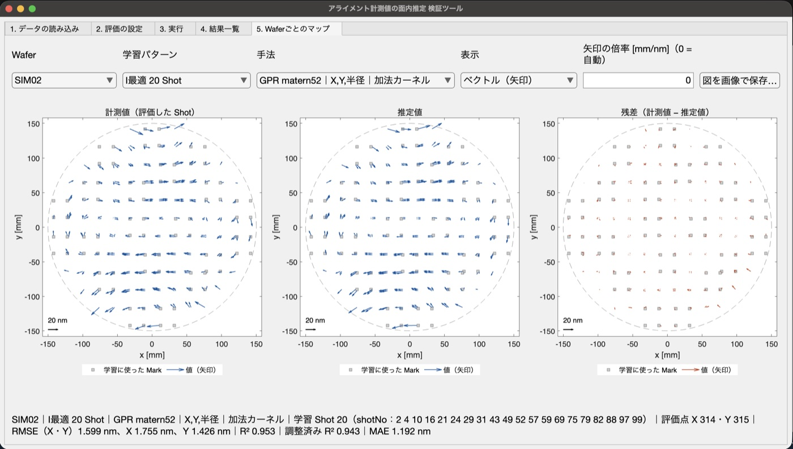
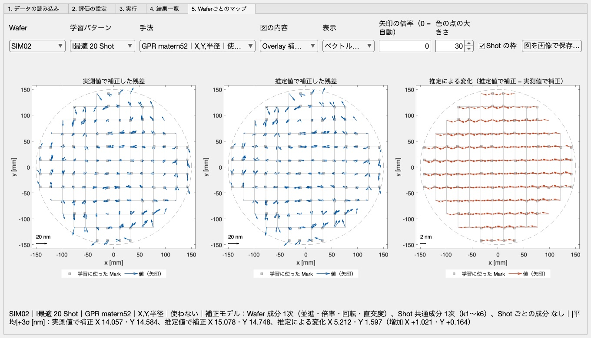
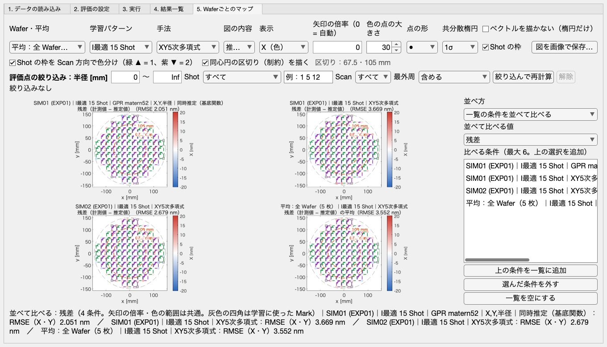
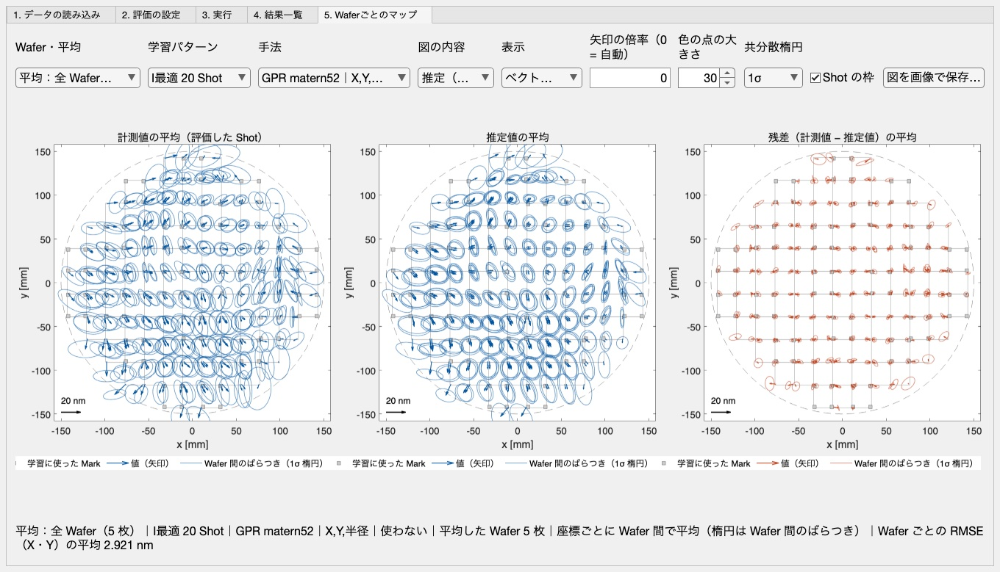
「6. ヘルプ」タブに、主な専門用語（学習 Shot・評価点・I 基準・D 基準・MAD など）、比べる手法、すべてのカーネル（GPR・GAM のガウス過程・Kriging のバリオグラム・TPS・RBF）の式、 Fringe Zernike の項、Overlay 補正の式（Wafer 成分・Shot 共通成分・Shot ごとの成分・メーカー別の式・評価の定義・式の書き方）をまとめています。左の目次で移動できます。
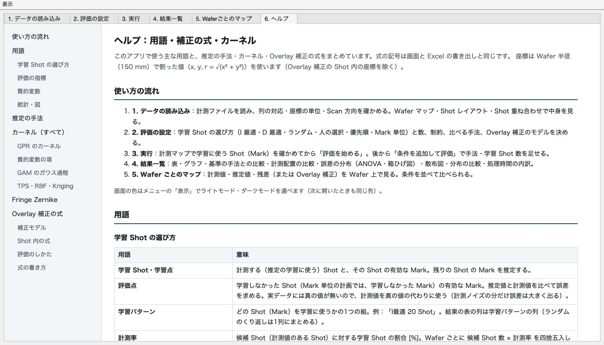
実データには真の値が無いので、学習しなかった Shot の 計測値 と推定値を比べます。 計測値には計測ノイズが含まれるため、誤差は模擬データでの評価より少し大きく出ます。手法どうしの比べ方は同じです。
Data format
1行目が項目名、2行目からデータの表です。項目名はアライメント計測テーブルの標準に合わせます（違っていても画面で対応づけられます）。
| 項目名 | 意味 | 必須 | 無いとき |
|---|---|---|---|
Operation | 工程名 | 任意 | 工程が違えば別の計測として扱う |
EqpId | 装置 ID | 任意 | 装置が違えば別の計測として扱う |
LotID | ロット ID | 任意 | ロットが違えば別の計測として扱う |
Wafer | ウェハ ID | 任意 | 全行を1枚とみなす |
DateTime | 測定日時 | 任意 | 同じ Wafer でも日時が違えば別の計測として扱う |
shotNo | ショット番号 | 任意 | 座標から番号を付ける（上の行から左→右） |
Direction | Scan 方向（1 または 2） | 任意 | 選んだ規則で付ける（初期値は一筆書き。「付けない」なら Scan 方向を質的変数・制約に使わない） |
Xmm, Ymm | ショット中心の座標 [mm] | 必須 | — |
Radius | ショット中心の半径 [mm] | 任意 | あれば Xmm・Ymm からの計算値と合うか確かめる |
markNo | ショット内のマーク番号 | 任意 | マーク座標の組ごとに番号を付ける |
markXmm, markYmm | ショット中心から見たマーク座標 [mm] | 必須 | — |
measX, measY | マークの測定値 [nm] | 必須 | — |
StsX, StsY | ステータス（0 = 有効、−1 = 未測定） | 任意 | 測定値が空でなければ有効 |
Verification
Troubleshooting
その PC の MATLAB に MATLAB Compiler のライセンスまたはインストールがありません。ver と入力して一覧に「MATLAB Compiler」があるか確かめ、
無ければ MATLAB の管理者に相談してください。exe を作らなくても、5章のとおり MATLAB の中では使えます。
MATLAB Runtime が入っていないか、版が違う可能性があります。exe を作った MATLAB と同じ版の Runtime が入っているか確かめてください。 インストーラーで入れ直すのが確実です。
ファイルを Excel で開いたままにしていないか、1行目が項目名になっているかを確かめてください。 読めるのは .xlsx・.xlsm・.xls・.csv です。
「列の対応」の表で、メッセージに書かれた項目の「ファイルの列」を選んでから、もう一度「この対応で読み込む」を押してください。
Direction の列に 1・2 以外の値があります。対応づけた列が正しいか確かめてください。Scan 方向を使わない場合は、Direction の対応を「（なし）」にします。
学習 Shot 数が Wafer の Shot 数に対して多すぎるか、制約が厳しすぎます。学習 Shot 数を減らすか、 「許容幅」を大きくする、または「4象限」「Scan 方向」の制約を外してください。
「2. 評価の設定」の下の目安を見ながら、比べる手法（「推奨の組み合わせ」が目安）や学習 Shot 数を減らしてください。 「すべて選ぶ」（245 手法）は数時間かかることがあります。I 最適の「交換法の初期配置の数」を減らすと、学習パターンを作る時間が短くなります。
同じ名前のファイルを Excel で開いていると書き出せません。閉じてからもう一度書き出すか、別の名前で保存してください。
CSV は UTF-8 で保存したものを読みます。Excel（.xlsx）のまま読み込むのが確実です。
失敗したテストの名前と、表示されたメッセージを控えて、ツールの管理者に連絡してください。 管理者は管理者ガイド（アプリの構成と保守）で、直す場所と確かめ方を調べられます。
ツールの管理者へ、発生日時・操作した画面・表示されたメッセージを連絡してください。 実データそのものは送らず、必要なら列名や行数だけを伝えてください。